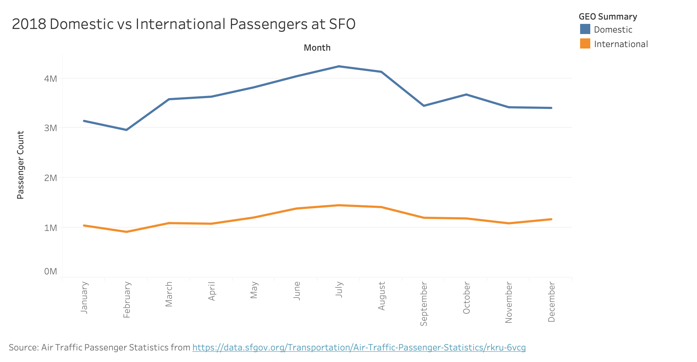
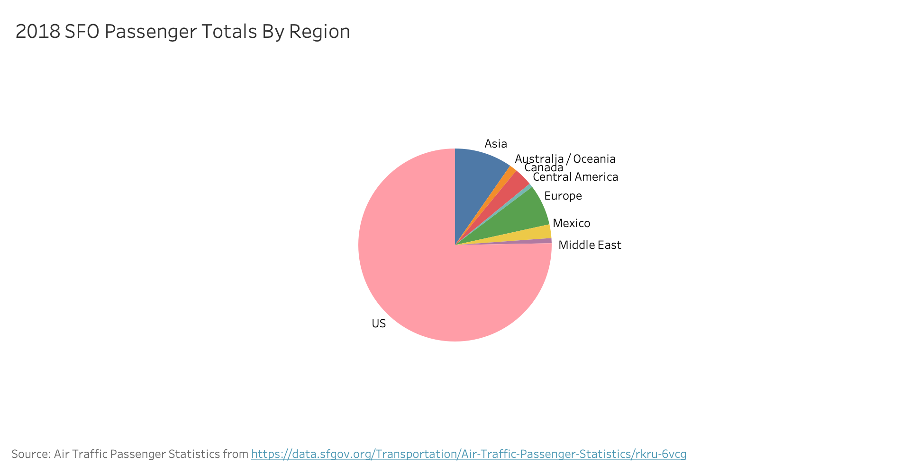

For Homework 1, I created 3 visualizations showing passenger activity at San Francisco International in 2018: a bar graph and a pie chart showing regional origin of passengers, and a stacked bar graph showing national/international status.
Data
The data is about monthly passenger activity at San Francisco International Airport, separated by airline. The full dataset is available online here. It's updated quarterly, and has over 21.k rows (per the assignment spec) of data dating back to 2005.
The original dataset has columns for Activity Period, Operating Airline (& IATA Code), GEO Summary, GEO Region, Activity Type, Price Category, Terminal, Boarding Area, and Passenger Count. For the purposes of this assignment, I focused on Activity Period, GEO Summary and Region, and Passenger Count.
Activity Period: "The year and month at which passenger activity took place", displayed as a six-digit numerical code "with the four-digit year preceding a two-digit month". Example: 200507
GEO Summary: Domestic/International (on a nonstop hop)
GEO Region: Provides more detailed information of GEO Summary. Possible values are US, Africa, Asia, Australia/Oceania, Canada, Caribbean, Central America, Europe, Mexico, Middle East, South America
Passenger Count: The number of passengers who departed or arrived that month.
Wrangling
In general, I rolled up data by certain categories (either GEO Summary or GEO Region), summed up passenger count accordingly, and filtered on Activity Period to get 2018 data only. More specific wrangling will follow each visualization.
Visualizations
Chart #1

Chart #2
Wrangling
Rolled up; Filtered 2018 activity data; Sorted by alphabetical order on region which conveniently allowed all the labels to be placed neatly. Pasted in JSON values in the HTML file (not recommended but having trouble with data scopes on the code I used as reference).
Tableau Prototype

D3 Chart
Conclusions
NO data from Africa or South America -- makes some sense re connecting. Despite SFO being called international, a lot of US traffic. I was surprised that more traffic from Asia than Canada or Mexico.
I live on the Peninsula, and I love dogs and bubble tea! (Not dogs in bubble tea). This is my first front-end class. I finally found the option to change the theme.